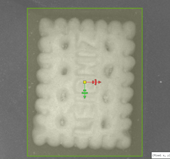
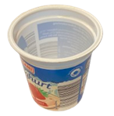
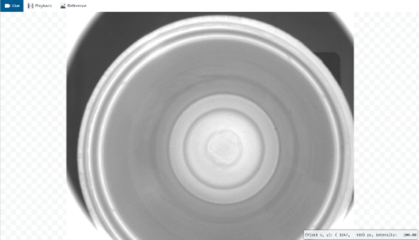

Exercises
Exercise 3 - Anomaly Detection
Exercise 3.1 - Crackers
Unlike classification, this exercise focuses on detecting anomalies rather than differentiating between predefined object types. The AI Anomaly Detection tool identifies irregularities and allows you to set a threshold that determines when an object is considered broken or not OK. Example Scenario: Test crackers to see if they are intact or broken. Goal: Test crackers to see if they are intact or broken.
Recommended objects
| info | image |
|---|---|
| For this exercise, we recommend using dry cookies or crackers. You can substitute these with similar objects that can easily be broken into large or small pieces, or manipulated in comparable ways. |
Acquisition: Place the object under the sensor. Align the object at the edge of the tray so its position varies only slightly between captures. Set the acquisition parameters. Use the FOV sliders to crop in on the object if needed for better focus and framing.

Tool: In the left panel, navigate to Analysis → Add Tool → Verify → AI Anomaly Detection.
Stop the image acquisition to set the boundaries and make sure it roughly tracks the object’s borders.
AI Anomaly Detection Settings: You can adjust the region shape for this if necessary. The AI Anomaly Detection tool identifies irregularities in objects by comparing them to a set of “good” reference images. To train the model effectively, you need images of objects in their correct state. You can collect them just like you did in the previous exercise.
-
Add at least 10 images of different crackers in the same position.
Minor variations (slight wiggle) are acceptable, but all objects must stay within the defined region.
Click to open the training settings.
Uncheck “strict matching” and train the network with suggested parameters. -
Check your results. Manipulate some objects by breaking off pieces or making similar changes. Observe the Anomaly Score for each object. Use the threshold slider to define when an object is considered “bad.”
- Green border = OK
- Red border = Not OK
-
Adjust the threshold so that good objects show a green border and broken ones show red. If necessary, add more sample images, including bad examples, and retrain. By clicking "?" in the training window, you can find out more about what the sliders and checkmarks do to improve your training. Experiment: What is the smallest variation you can detect without triggering a false “bad” result?
- Play with the Visualization Range slider. What does it do and how does it help you visualize object defects? How would you set it?
Exercise 3.2 - Yogurt Cups
Imagine you are a yogurt producer. Goal: Perform a visual inspection of empty yogurt cups (or similar objects) to ensure they meet quality standards before filling.
Recommended objects
| info | image |
|---|---|
| For this exercise, we recommend using dry cookies or crackers. You can substitute these with similar objects that can easily be broken into large or small pieces, or manipulated in comparable ways. |  |

- Put an empty yogurt cup in the tray. Set up Image Acquisition and set AI Anomaly detection to detect if there are foreign objects in the cup.
- How well can you finetune the settings, what’s the smallest/thinnest object you can detect, while the empty cup still passes? Compare with other groups.
- Save and create a new Job to move on with the next exercise.